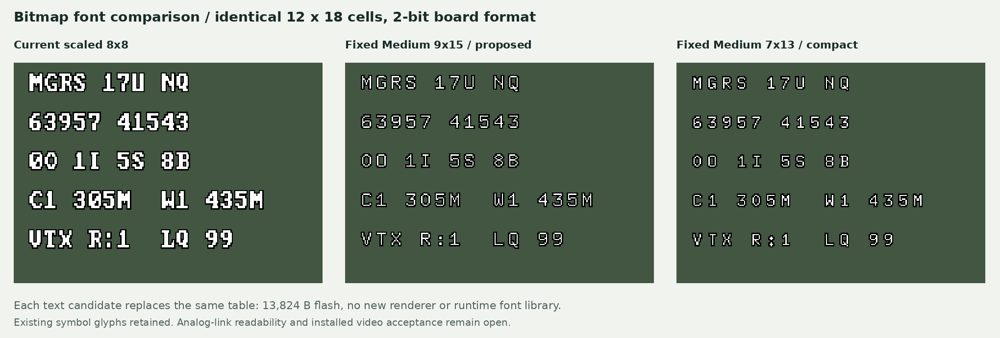

Authored report · Source / retained evidence in private GitHub repository ↗
Thinner bitmap font candidates — 2026-11-03
Fixed Medium 9x15 is the proposed preview font. It provides thinner strokes and more open counters than the current enlarged VGA-style text while fitting the board's existing 12 × 18 pixel cell. Fixed Medium 7x13 is a smaller alternative. The gallery compares all three at identical cell spacing; this change does not increase the column/row count.

Source and encoding
Both candidates come from the primary bitmap files 9x15.bdf and 7x13.bdf. Their embedded notice identifies them as public-domain fonts. sources.json records source URLs, retrieval date, full-download hashes and retained ASCII-subset hashes. The BDF subset keeps its original copyright notice. No U8g2 runtime code is needed.
The offline candidate generator centres the native bitmap in a 12 × 18 cell and uses the existing generator's one-pixel black outline and 2-bit encoder. It replaces ASCII 0x21–0x5F and cardinal-letter glyphs 0x18–0x1B. Other glyphs, including direction arrows, units and battery symbols, remain byte-identical. Codes 0xA0–0xFF stay empty; no startup logo is introduced.
Concrete board-format candidate
Generated artifacts:
- font_osd_thin.c: the same
const uint8_t font_osd[256][54]symbol and header contract as the current firmware font. It is a replacement candidate, not an additional file to link alongside the existing table. - font_osd_thin.bin: 13,824 bytes, in glyph order, 54 bytes per glyph.
- 9x15 atlas, current atlas, 7x13 atlas.


The binary is a font-table dump, not a flashable MCU image. Adopt the replacement C table through a reviewed firmware rebuild.
One replacement table occupies the same 13,824 bytes of constant data as the current font. It requires no runtime BDF/TrueType decoder, floating-point font rendering or extra font RAM. Keeping both full tables for a runtime selector would instead add 13,824 bytes of flash. The browser comparison assets are not an MCU allocation.
Reproduce with python3 tools/render_osd_reference.py from the repository root.
The standard --check also compares the generated C and binary. Verified with
arm-none-eabi-gcc -mcpu=cortex-m4 -mthumb against the real font header: .rodata is
13,824 bytes, .data and .bss are zero, and the extracted ARM object data matches the
exported binary byte for byte. This is an isolated table compile, not a firmware link
or PCB test. The installed firmware source table remains unchanged.
Before board adoption, review confusing glyph pairs (0/O, 1/I, 5/S, 8/B), MGRS
readback, small unit labels, bright/dark scenery, PAL/NTSC interlace and the actual analog
link/goggles/DVR. Thinner one-pixel strokes can disappear after blur or noise. This preview
does not establish installed readability, electrical timing or flight acceptance.